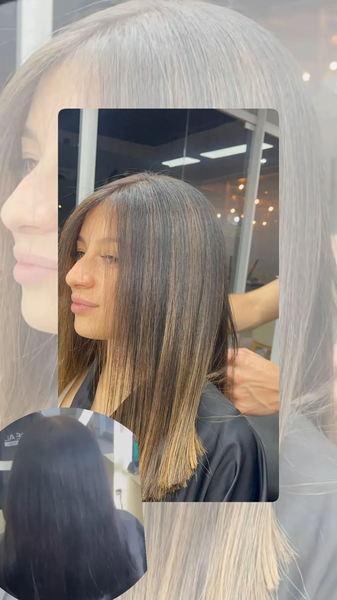
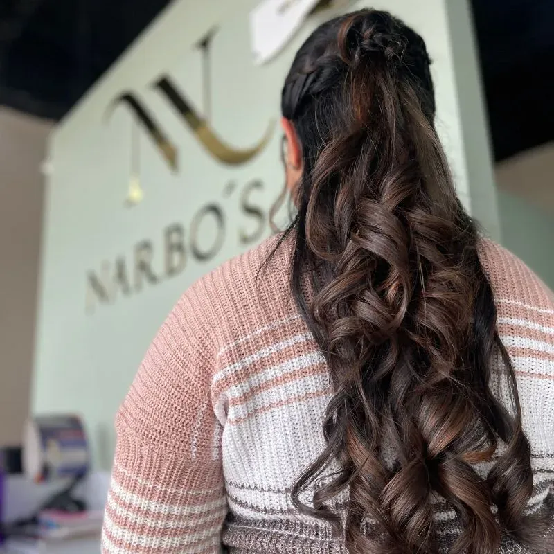

Peluquería & Estilo
Expertos en realzar tu belleza con técnicas de vanguardia y productos de clase mundial.
Transformamos tu Imagen con Arte y Experiencia
En Narbo's Salón Spa, entendemos que tu cabello es tu mejor accesorio. Nuestro equipo de estilistas expertos está en constante formación para ofrecerte lo último en tendencias mundiales.
Nuestros Servicios Destacados:
-
Coloración Avanzada: Balayage, Babylights y cubrimiento perfecto.
-
Cortes de Diseño: Asesoría personalizada según tu rostro.
-
Salud Capilar: Keratina y Botox Capilar con marcas premium.

Nuestros Trabajos




Preguntas Frecuentes
¿Qué marcas de tinte utilizan?
Trabajamos exclusivamente con marcas profesionales de alta gama como Wella, L'Oréal y Schwarzkopf. Esto nos permite garantizar colores vibrantes, duraderos y el máximo cuidado para la salud de tu cabello.
¿Realizan pruebas de alergia?
Sí, tu seguridad es nuestra prioridad. Para clientes nuevos o cambios radicales de color, recomendamos realizar una prueba de alergia con 24-48 horas de antelación para descartar cualquier reacción a los componentes del tinte.
¿Cuánto dura una sesión de Balayage?
El tiempo varía según el largo y volumen de tu cabello, pero generalmente un servicio de Balayage completo toma entre 3 a 5 horas. Nos tomamos el tiempo necesario para lograr un degradado perfecto cuidando la fibra capilar.
¿Tienen tratamientos para cabello dañado?
Absolutamente. Ofrecemos terapias de repolarización, cauterización, keratina y Botox capilar diseñados para restaurar la hidratación, fuerza y brillo del cabello procesado o maltratado.
¿Es necesario agendar cita?
Para garantizarte la mejor atención y evitar esperas, te recomendamos agendar tu cita previamente, especialmente para servicios de color y tratamientos largos. Puedes hacerlo fácilmente a través de nuestro botón de WhatsApp.